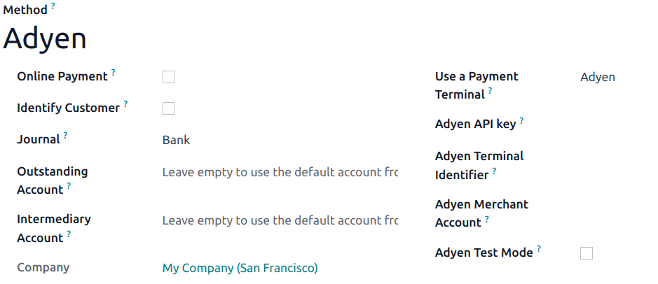

Adyen¶
Connecting an Adyen payment terminal allows you to offer a fluid payment flow to your customers and ease the work of your cashiers.
Important
Adyen payment terminals do not require an IoT Box.
Adyen terminals can be used in many countries, but not worldwide. Check the List of countries supported by Adyen.
Adyen works only with businesses processing more than $10 million annually or invoicing a minimum of 1,000 transactions per month.
Configuration¶
Start by creating your Adyen account on Adyen’s website. Then, board your terminal following the steps described on your terminal’s screen.
Generate an Adyen API key¶
The Adyen API key is used to authenticate requests from your Adyen terminal. To generate an API key, go to your , and create new credentials or select existing ones. Click Generate an API key and save the key to paste it into the Odoo Adyen API key field at the payment method creation.
See also
Locate the Adyen terminal identifier¶
The Adyen Terminal Identifier is the terminal’s serial number, which is used to identify the hardware.
To find this number, go to your , select the terminal to link with, and save its serial number to paste it into the Odoo Adyen Terminal Identifier field at the payment method creation.
Set the Event URLs¶
For Odoo to know when a payment is made, you must configure the terminal Event URLs. To do so,
Log in to Adyen’s website;
Go to and select the connected terminal;
From the terminal settings, click Integrations;
Set the Switch to decrypted mode to edit this setting field as Decrypted;
Click the pencil icon button and enter your server address, followed by
/pos_adyen/notificationin the Event URLs field;Click Save at the bottom of the screen to save changes.
Configure the payment method¶
Enable the payment terminal in the application settings and create the related payment method. Set the journal type as Bank and select Adyen in the Use a Payment Terminal field.
Finally, fill in the mandatory fields with your Adyen API key, Adyen Terminal Identifier, and Adyen Merchant Account.
Once the payment method is created, you can select it in your POS settings. To do so, go to the POS’ settings, click Edit, and add the payment method under the Payments section.
Pay with a payment terminal¶
When processing a payment, select Adyen as the payment method. Check the amount and click on Send. Once the payment is successful, the status changes to Payment Successful.
Note
- In case of connection issues between Odoo and the payment terminal, force the payment by clicking on Force Done, which allows you to validate the order.This option is only available after receiving an error message informing you that the connection failed.
To cancel the payment request, click on cancel.